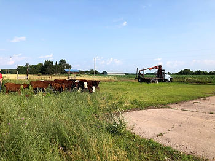

Vaccination, deworming and confirming pregnancy are all important aspects of having and maintaining a thriving herd of beef cattle. Every herd is unique and vaccination protocols must be tailored to best fit each operation. With that being said, there are a handful of "basic" or "core" vaccinations that every herd should be protected against.
Every herd should be vaccinated for respiratory and reproductive diseases. The biggest threats are Infectious Bovine Rhinotracheitis (IBR), Bovine Viral Diarrhea Virus (BVDV), Parainfluenza 3 and Bovine Respiratory Syncytial Virus (BRSV). Leptospirosis is a common bacterial infection associated with reproductive disease (abortion) and is prevalent enough in our practice zone to include it on the "core" list of diseases.
Vaccination for the diseases listed above can be done with a modified live vaccine or a killed vaccine. It is recommended that all young stock (animals that have not been vaccinated) receive at least one modified live vaccine and then a booster of a killed vaccine. Adult cattle that have been vaccinated at some point in their life with a modified live vaccine, should be vaccinated annually with a killed vaccine. The utilization of both a modified live and killed vaccine has been shown to be the most efficacious vaccination protocol.
The second type of vaccination all beef cattle should be immunized for are the clostridial diseases. Clostridial organisms live in the soil everywhere and the most common disease causing bacteria are Clostridium haemolyticum, Clostridium perfringens, Clostridium chauvoei, Clostridium septicum and Clostridium novyi. The previously listed bacteria are the cause of Red Water Disease, Malignant Edema and Black Leg.
The clostridial vaccines are only available in a killed vaccine form. Initial vaccination should be followed up by a booster in 3-6 weeks and then annual (every 6 month to 1 year) vaccination thereafter.
Deworming at least twice yearly should be performed to limit the intestinal parasite load in a herd. Management strategies are just as important of a factor as the deworming product used. Appropriate strategies to reduce parasite burdens include: keeping the pastures from becoming overcrowded, not overgrazing cattle so they're eating closer to the ground, rotational grazing and the utilization of feeders. Manure samples can be analyzed to look for specific parasites and/or parasite load to determine which is the best products to be using and timing.
Detection of pregnancy is imperative to building an economically successful herd. Open cows/heifers are extremely cost-ineffective and should be removed from the herd if they are not successfully reproducing yearly. Ultrasound technology has provided the ability to determine viable pregnancy accurately and quickly on farm. Pregnancy checking between day 30-75 post breeding can determine accurate calving windows and is the most accurate time for detection of twins. Later pregnancy moves the fetus/uterine body from the pelvic brim to the abdominal cavity; ultrasounding is still accurate at this time, however, fetal positioning is more difficult and detection of size/twins can be more challenging.
Leading Edge Veterinary Services is proud to offer all services pertaining to your beef herd needs. We can construct customized vaccination and deworming protocols. There are several diseases not listed above that may be affecting your farm (scours or mastitis) that we can help identify and fix. We have ultrasound machines for use out in the field and we carry vaccines and deworming products. This was a very basic overview; but the foundation for the start of a very successful beef herd.